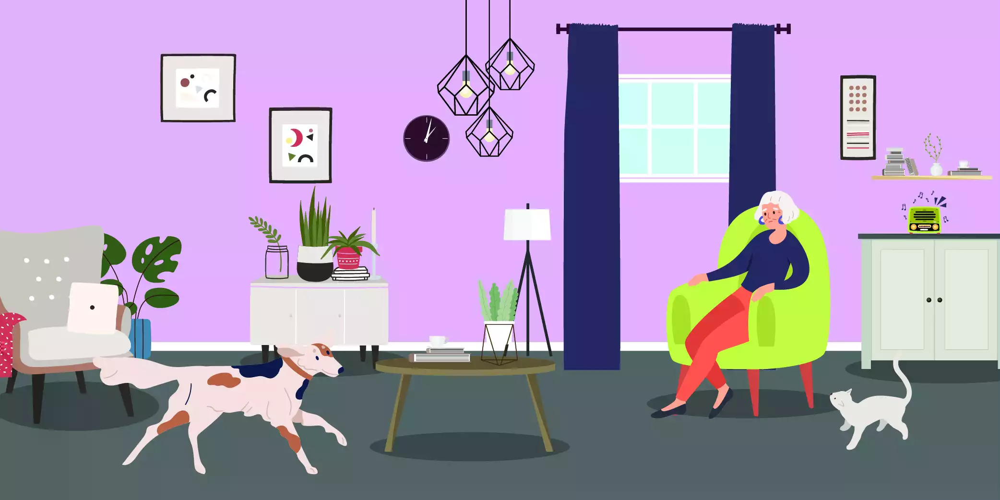

“The most terrible poverty is loneliness, and the feeling of being unloved.”
Mother Teresa
Humans are born social. We find comfort among each other. However, we still need alone time for ourselves. Away from the noise and clatter to find who we truly are in this world. That being said, there is a fine line between taking time off for yourself to recharge or relax and being unable to socialize even when you really want to. Craving for someone to talk to and hang out with can make one feel lonely. With the technology pushing easy small talk in a pandemic, the chances of meeting anyone are far less. These issues have aided a rise in lonely people. People’s loneliness is grown by social media and fast life. Isolation and loneliness are linkable. Chronic loneliness and isolation can have a negative impact on one’s physical and mental health.
People get lonely for different reasons and to different extents. Their loneliness is treatable using diverse ways. In any effect, feeling isolated and lonely does not work out for the better. Therefore, we must find ways to break through the barrier of being lonely.

What is loneliness?
Varied people have different requirements for “me time.” Some people require more “me time” than others, while others require a more social connection. When this desire for social interaction is not addressed over time, loneliness can develop. Children and adults can experience chronic loneliness and isolation. Despite being surrounded by people, an adult or child can feel lonely and alone. This is because people may not be sympathetic or interact with them sufficiently, causing them to feel lonely. As a result, you may require something or someone else in order to feel your best. To avoid issues, it’s critical to be able to recognize and handle loneliness.
Social isolation and loneliness
Although there is no certainty the way a person’s family work will lead to or prevent loneliness, some scenarios are more likely than others to be connected with loneliness. Loneliness is made worse by living alone and not being in a relationship with another person. Loneliness increases with the loss of a relationship, regardless of age. Men, on the other hand, are more affected than women. Separated men are more than 13 times more likely than married men to suffer loneliness. Separated women are twice as likely as married women to be lonely. Single parents are more socially isolated than adult singles without children or couples. Loneliness worsens by a sense of isolation from others.
Although there is no effect on social isolation and loneliness based on geography, social fragmentation and isolation in a given geographic location can influence social isolation and loneliness. Unemployment, needing government assistance, and being dissatisfied with one’s financial circumstances are all contributors to the development of loneliness in people of all ages and genders. Loneliness can be self-reinforcing if it’s accompanied by sadness or anxiety, especially when it comes to social contacts.
Why does loneliness happen?
Loneliness takes place due to a variety of factors. For instance, you may be lonely if you, change your school or your work, work from home, relocating to a new city, break up a relationship, or if, for the first time in their lives, they are living alone. Feelings of loneliness may fade as you adjust to your new surroundings, but they might sometimes endure. It’s not always easy to talk about how lonely you are. If you have trouble reaching out to people, you may feel even more alone.
Loneliness and social isolation get worse by a lack of meaningful relationships. This is why you can feel lonely even if you have a large social network. Maybe you have a lot of casual friends and spend a lot of time socializing. However, you don’t feel close to anyone. If you’re single and don’t want to be, spending a lot of time with couples and families can make you feel lonely. Even if you’re happily single, something may happen.
Living with mental or physical health problems can make you more lonely. Health problems can be lonely because it’s tough to communicate how you’re feeling. Social activities can sometimes demand too much emotional or physical energy. You may find yourself cancelling more plans than you maintain.
A lack of social interaction will eventually make you feel much worse.
Impact of social isolation and loneliness
Loneliness and social isolation have been related to a higher risk of death, poor physical and mental health, and an overall sense of unhappiness with life. Mental illness, emotional misery, suicide, dementia, early death, bad health behaviors, smoking, physical inactivity, poor sleep, and biological impacts, such as high blood pressure and low immune function, have all been associated with social isolation.
Loneliness may surface like this
- depressed and empty.
- unable to be content
- low energy
- concentration problems
- sleep disturbances
- difficulty sleeping
- oversleeping
- appetite loss
- low self-assurance
- having a hopeless feeling
- feeling insignificant
- always worried
- Aches and pains in the body that don’t go away
- exhaustion
- no motivation
- having trouble getting out of bed
- drug abuse
- spending too much time in front of the television
- having a strong desire to spend a lot of money
- craving warmth, such as hot beverages, baths
- addicted to alcohol
Can loneliness and social isolation be dealt with?
Working for a living and caring for others can help with loneliness. Volunteering and being an active member in sporting or community organizations can also reduce social isolation. However, whether community engagement can regularly operate as a factor in the development of loneliness is yet to be seen.
Having a pet can also be a great way of dealing with loneliness. Pet owners claim that there is never a boring time with their pet around. Having to care for them and focusing on their needs apart from the good time spent with them can keep one busy and distracted from the loneliness. They just won’t be lonely anymore with a loyal and lively companion by their side all the time.
For males, being in a relationship protects them from loneliness more than for women. Men living alone report higher levels of loneliness than those living with others, while women living with others report similar levels of loneliness.
Tips to deal with loneliness
Acknowledge it
Telling others you’re lonely can be frightening, humiliating, and self-defeating. However, expressing that emotion might be the first step toward letting it go. We have a tendency to associate loneliness with being a loner or a loser. We avoid admitting we’re lonely because of the stigma attached to it. Denying our loneliness simply serves to make it worse. Therefore we must be honest with ourselves before we can recover. Starting with ourselves.
Focus on the good that is right in front of you
When we’re lonely, it’s easy to lose sight of what’s there in front of us. When it comes to emotions, many of us develop tunnel vision, in which we ‘count’ only some acts while dismissing others. I may notice that my friends don’t tell me they love me or ‘like’ my social media posts, but I ignore the fact that they constantly volunteer to assist me when I have a project. When people broaden their notions of affection and love to include a broader range of activities, they often find that they aren’t as deficient as they previously believed.
Open your eyes to newer things
Recognize that loneliness takes different forms for various individuals at different points in their lives, and that some people have many relationships but yet feel lonely. Consider how you would feel if you were alone. It’s critical to understand the difference between situational and chronic loneliness. Most people, especially in today’s individualistic, independence-valuing, more-single-than-ever world, experience loneliness from time to time. However, if I’m experiencing loneliness more frequently than usual, I’m intrigued. Have I been cultivating my existing relationships and fostering new ones that make me feel’seen’? Am I isolating myself on purpose or by accident? Whether our loneliness is short-term or long-term, questions like these might point us in the right direction.
Take it easy on yourself
If you’re constantly busy, rushing around with your to-do list, or feeling pressured at work because of all the meetings, it’s time to slow down. When people’s schedules go back-to-back for an extended period of time, they can become disconnected from themselves and others. Overworking and too many stimuli cause them to become overwhelmed. Listening to music, taking a bath, or simply sitting with nothing to do and nowhere to be could all be examples of relaxing for you.
New connections of love
You can use your alone time to reconnect with yourself. It is necessary for you to be your own best buddy. Meditate and go to your sacred area. Take a few deep breaths, relax, and ask anxiety, fear, and loneliness to leave you alone. Newcomers to meditation can attempt sitting for three minutes and focusing on something pleasant or simple things for which they are grateful.
Be kind
Also, be aware of other people’s goodness! When you’re lonely, it’s natural to want to shut yourself off from the rest of the world. This just helps the cycle of loneliness. Finding a group of pals to hang out with or entering a vast social scene can be too much. So, why don’t you start small? When you go out into the world, you’ll notice that the store clerk is smiling. When you hold a door for someone or do something nice for a stranger, your body begins to produce endorphins and oxytocin. If you’re feeling extroverted, you could even try striking up a discussion.
Get out every day and have a face-to-face chat with your neighbor, a friend, your grocer, the library, or anybody else you might encounter on a daily basis. It isn’t necessary for this to be a tight friendship. Even weak ties, according to research, boost our immunity and well-being.
Be a good person that gives back to people
Going into your neighborhood to volunteer is another approach to form new, important relationships. Instead of focusing on oneself, the goal is to concentrate on others. Building a stronger social network is one of the most effective ways to combat loneliness. Community and religious organizations, social groups based on common interests are all great methods to meet new people. Even if you don’t make a new buddy right soon, stepping out of the home and doing something selfless on your own is one of the finest ways to combat feelings of isolation. You should have no problems locating an organization in your neighborhood that needs your support.
Adopt a fur baby!
According to recent study, most people associate loneliness with conflict within their own families and social networks. If you’re missing something in your social life, why not fill it with a playful energy that’s always there for you? Finding a furry friend could help you find more happiness in your daily life. Getting a new pet is a good idea, only if you can handle the duty.
Diagnosing loneliness
Chronic loneliness isn’t a mental health disorder. Experts are becoming more aware of how loneliness can harm your physical and emotional health. If you’ve been feeling lonely and are experiencing symptoms like the ones listed above, speaking with a mental health expert may be beneficial.
A therapist can assist you in identifying any mental health issues that may be causing your symptoms. Even when loneliness isn’t diagnosed, counselling can help you find support and possibly useful resources. They can also give you advice on how to deal with the symptoms of loneliness and assist you in making positive changes.
Issues associated with loneliness
Experts are suggesting that loneliness and isolation, whether they occur together or separately, can have far-reaching health consequences. Here’s what some recent study has to say.
Chronic loneliness is linked to an increased risk of heart disease, high cholesterol, and diabetes. It can lead to worry, emotional anguish, addictions, or depression, among other mental health issues. Suicide risk can also be increased by loneliness.
Sleep disruptions are another. Chronic loneliness can lead to problems falling asleep and/or sleeping through the night. Sleep deprivation can impair performance during the day, resulting in daytime sleepiness and weariness.
Also, Depression. Loneliness and social isolation can increase the risk of depression and worsen its symptoms.
How to prevent loneliness from taking over your life
Make yourself at ease with spending time alone. This does not imply that you must be alone all of the time. People are generally thought to benefit from having at least some social interaction. But, even if being alone isn’t your first choice, if you love the time you spend alone, you’re more likely to feel good about it.
Select activities that are both enjoyable and satisfying. Relaxing on the couch in front of your favourite TV show can be soothing, in particular, can improve your mood. However, make sure to do a variety of things in your life, such as artistic or physical endeavours. Even listening to music or reading a book has the potential to reduce loneliness.
Make time for physical activity. Exercise has been shown to be beneficial to mental health. While exercise may not be able to help with loneliness on its own, it can assist to enhance your mood and raise your emotions of healthiness, which may provide some protection from loneliness.
Take advantage of the fresh air. Sunlight can help your body produce more serotonin, which can enhance your mood. Spending time in nature has been shown to aid with sadness, anxiety, and stress, according to research. Participating in a group walk or team activity might also help you connect with people.
How can we help?
We as experienced clinicians and counsellors are ready to help you with the diagnosed or undiagnosed loneliness that you feel. We understand that sometimes the feeling can be so heavy and binding. It does not have to be, with the help we are ready to assist you with. Guidance will be provided to show you the best ways out of loneliness and put you out of your misery.
It’s not a bad thing to be alone, and it’s not a bad thing to like being alone. However, being alone when you’d rather be with others can cause loneliness and have other negative consequences on your mood, sleep, and overall well-being.
Some people are lonely for a short period of time, while others may be lonely for months or even years. You might be unsure how to deal with loneliness because it isn’t a mental health disease with a clear prescribed therapy. Overcoming loneliness can be challenging. Especially if you’re timid, introverted, or have trouble meeting new people. It may take some time, but developing new relationships or deepening old ones is extremely achievable in your life.